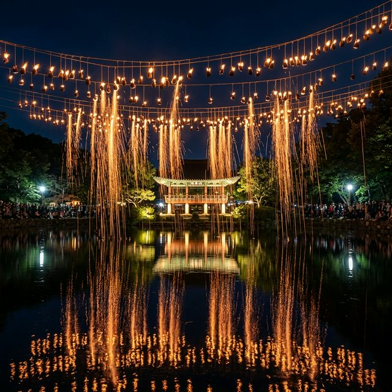
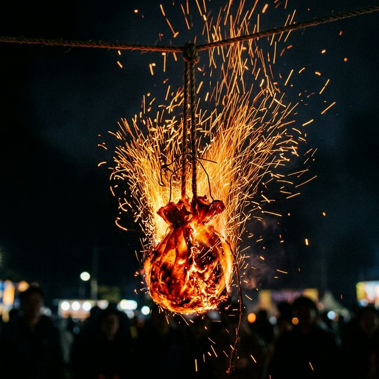
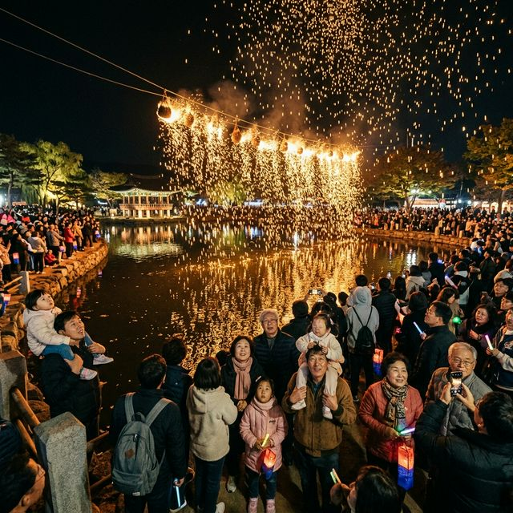

올해 함안 낙화놀이는 석가탄신일인 2026년 5월 24일(일)로 예정되어 있습니다. 5월의 싱그러움이 절정에 달하는 시기이자 연휴의 끝자락인 일요일에 개최되어, 많은 분이
여행의 화룡점정으로 선택하실 것으로 보입니다. 장소는 함안면 괴산리에 위치한 경남도 유형문화재 '무진정(無盡亭)'입니다. 조선 시대 중종 때 지어진 이 정자는 연못
한가운데 자리 잡고 있어, 주변의 고목들과 정자가 어우러진 풍경 자체가 이미 한 폭의 산수화와 같습니다.
행사 당일 점화 시간은 오후 7시경부터 약 2~3시간 동안 이어집니다. 하지만 진정한 축제의 맛을 즐기려면 오후 일찍 도착하시는 것이 좋습니다. 낮 동안의 무진정과 밤의
무진정이 주는 분위기가 완전히 다르기 때문인데요. 밝은 햇살 아래서 낙화봉이 정갈하게 매달려 있는 풍경을 미리 눈에 담아두셔야, 밤에 그 봉지들이 터지며 만들어내는 불꽃의 궤적을 더욱 입체적으로
감상하실 수 있습니다. 장소 자체가 협소하기 때문에 축제 당일 안전 요원의 안내에 따라 지정된 구역에서 질서 있게 대기하는 미덕은 필수입니다.

무진정 연못 위로 쏟아지는 찬란한 불꽃 폭포의 장관 — AI 제작 이미지
과거 자유 관람 시절의 인파 사고 우려로 인해 함안 낙화놀이는 이제 100% 온라인 사전 예약제로만 운영됩니다. 현장 매표소 자체가 운영되지 않기에, 예약 없이
방문했다가는 멀리서 연기만 보고 돌아오는 낭패를 겪을 수 있습니다. 2026년 예매는 전용 예매처인 예스24(YES24)를 통해 4월 하순경에 시작될 것으로 보입니다.
예약은 함안군민 우선 물량과 일반 관광객 물량으로 나뉘어 있으니, 본인이 해당하는 카테고리를 정확히 파악하는 것이 우선입니다.
예매 성공을 위한 팁을 드리자면, 무조건 PC와 모바일 앱을 동시에 준비하세요. 서버 시간이 오픈되는 정확한 순간에 새로고침을 해야 하며, 미리 예스24 회원 가입 및
결제 수단 등록(간편 결제 권장)을 마쳐두어야 0.1초 차이의 승부에서 승리할 수 있습니다. 아이디당 예매 수량이 제한되어 있으므로 가족 단위 방문객이라면 여러 명의 아이디를 동원하는 것도 방법입니다.
또한 예약 확인 후에 전송되는 입장용 QR코드는 현장에서 검표 시 매우 엄격하게 대조하므로, 절대 지인에게 캡처 본을 넘기거나 재전송받는 형태의 중고 거래는 지양하시길
바랍니다.
축제 당일 무진정에서 반경 1km 이내는 차량 통행이 전면 금지됩니다. 행사장 바로 앞에 내릴 수 있다는 생각은 애초에 버리시는 것이 좋습니다. 함안군에서는 대중교통
이용을 장려하기 위해 함주공원, 함안고등학교, 가야초등학교 등 거점 지역에 대규모 임시 주차장을 마련하고 있습니다. 이곳에 차를 세우고 준비된 셔틀버스를 이용하는 것이
가장 속 편한 이동 방법입니다.
셔틀버스는 보통 오전 10시부터 밤 11시까지 수시로 운행되지만, 점화 시간이 임박한 오후 5시 이후에는 셔틀버스를 기다리는 줄만 수백 미터에 달할 수 있습니다. 팁을 드리자면, 차라리
오후 2~3시경에 미리 주차를 마치고 행사장 근처로 이동해 주변 카페나 유적지를 둘러보시는 '선점형 관광'이 훨씬 이득입니다. 또한 퇴장 시에도 모든 인파가 한꺼번에
몰리므로, 행사 종료 20~30분 전에 미리 셔틀버스 승강장으로 이동하거나, 차라리 장내에서 야경을 충분히 즐기다 가장 마지막 버스를 타겠다는 여유를 가지는 것이 좋습니다.
어느 자리에서 보느냐에 따라 낙화놀이의 감동은 천차만별입니다. 최고의 명당은 당연히 무진정 정자를 정면으로 바라볼 수 있는 연못 건너편 산책로입니다. 이곳에서는 화려하게
쏟아지는 불꽃과 함께 물 위에 비친 반영, 그리고 고풍스러운 정자의 모습까지 한 프레임에 담을 수 있습니다. 하지만 이곳은 가장 경쟁이 치열하여 개장 직후부터 자리를 잡는 분들이
많습니다.
만약 정면 자리를 놓쳤다면 연못 좌측 길가를 공략해 보세요. 이곳은 지대가 살짝 높아 불꽃이 나무와 나무 사이로 쏟아지는 모습을 입체적으로 감상할 수 있습니다. 사진
촬영에 욕심이 있으시다면, 삼각대 사용이 가능한 구석 자리를 미리 확보하시길 권합니다. 다만 인파가 밀집되면 삼각대 사용이 타인에게 불편을 줄 수 있으므로, 고감도로 설정한 손 떨림 방지
기능을 최대한 활용해 스냅 샷 형태로 남기시는 매너도 필요합니다. 최근에는 드론 촬영이 엄격히 통제되고 있으므로, 휴대폰 광각 렌즈를 활용해 전체적인 현장 분위기를 담아보시는
것을 추천드립니다.

전통 방식으로 제작된 낙화봉이 타오르며 불꽃을 뿜어내는 모습 — AI 제작 이미지
낙화놀이의 핵심인 '낙화봉'은 참나무 숯을 곱게 갈아 한지에 싼 뒤, 광목 천으로 다시 감싸 꼬아 만든 전통 제작물입니다. 이 안의 숯가루가 열을 받으며 터지는 원리인데요. 이 과정에서 필연적으로
미세한 숯가루 재와 연기가 발생하게 됩니다. 바람의 방향에 따라 이 재가 관람객 구역으로 쏟아질 수 있는데, 이는 뜨겁지는 않으나 흰 옷이나 고가의 의류를 오염시킬 위험이
있습니다.
따라서 방문 시에는 어두운 계통의 면 소재 옷이나 아웃도어 의류를 입으시는 것이 좋습니다. 또한 숯이 타면서 발생하는 연기가 매울 수 있으므로 호흡기가 약한 어린이나
어르신은 마스크 착용이 필수입니다. 팁을 하나 더 드리자면, 눈에 재가 들어갈 경우를 대비해 인공눈물을 지참하시고, 장시간 불꽃을 바라봐야 하므로 눈의 피로를 줄일 수
있는 안경 등을 활용하는 것도 지혜로운 방법입니다. 인위적인 화학물질이 들어간 폭죽이 아니기에 건강에 치명적이지는 않으나, 소중한 여행을 불편함 없이 즐기기 위한 최소한의 개인 방역이라 생각하고 준비해
주시기 바랍니다.
함안을 방문했다면 낙화놀이만 보고 가기엔 너무나 아쉽습니다. 무진정에서 멀지 않은 곳에 유네스코 세계유산으로 등재된 가야 시대의 유적, 말이산 고분군이 자리 잡고
있습니다. 거대한 능선 위로 펼쳐진 고분군 사이의 산책로는 마치 이 세상이 아닌 듯 신비로운 풍경을 자아냅니다. 특히 일몰 직전 이곳에 오르면 고분 곡선 사이로 떨어지는 해를 볼 수 있는데, 낙화놀이
전후로 방문하기에 최적의 동선입니다.
식사는 함안의 자부심인 '한우국밥'을 빼놓을 수 없습니다. 함안 시장 근처에는 수십 년 동안 가마솥 불을 끄지 않은 국밥 골목이 형성되어 있습니다. 소고기가 큼직하게
들어간 얼큰한 국물에 선지까지 듬뿍 담아주는 국밥 한 그릇이면 여행의 고단함이 금세 녹아내립니다. 팁으로, 축제 기간에는 유명 식당의 대기줄이 매우 길 수 있으므로 오후 4~5시경 이른
저녁을 드시고 무진정으로 입장하시는 스케줄이 가장 효율적입니다.

따스한 불꽃 아래 모인 가족과 연인들의 행복한 순간 — AI 제작 이미지
성공적인 관람을 위해 간이 의자나 돗자리는 필수입니다. 바닥에 앉아 대기하는 시간이 길기 때문인데요. 다만 통로를 방해할 정도로 큰 돗자리는 자제해 주시는 것이
매너입니다. 또한 밤이 되면 연못 주변의 기온이 급격히 떨어지고 바닷바람 못지않은 산바람이 불어올 수 있으니 경량 패딩이나 두툼한 담요를 꼭 챙기세요. 낮에 덥다고 얇게
입고 갔다가는 감기에 걸리기 십상입니다.
반면, 가져가지 말아야 할 것도 있습니다. 인파가 밀집된 곳에서 커다란 우산이나 장우산은 뒷사람의 시야를 가릴 뿐만 아니라 낙화봉에서 떨어지는 불꽃에 구멍이 날 위험이
있습니다. 우천 시에는 가급적 우비를 준비하시고, 음식물 섭취 후 발생한 쓰레기는 반드시 본인이 회수하는 성숙한 시민 의식을 보여주세요. 보조배터리는 여유 있게 두 개 정도 챙기시는 것을 권합니다.
밤샘 대기와 화려한 영상 촬영으로 스마트폰 배터리가 생각보다 빨리 소모되기 때문입니다.
함안 낙화놀이는 단순한 볼거리를 넘어 액운을 쫓고 복을 기원하는 **축원(祝願)의 의미**를 담고 있습니다. 붉게 타들어 가며 물속으로 스러지는 불꽃 하나하나에 올 한 해의 소망을 담아보세요. 특히
부모님을 모시고 방문하신다면, 숯가루가 탁탁 터지는 소리가 마치 옛 어른들의 추억을 자극하는 소리처럼 들려 더욱 깊은 교감을 나누는 시간이 될 것입니다.
2026년의 봄인 지금, 우리는 여전히 많은 고민과 과제를 안고 살아갑니다. 하지만 함안 무진정의 밤하늘에서 쏟아지는 불꽃의 폭포를 바라보고 있노라면, 그 모든 걱정이 불꽃처럼 타서 사라지는 묘한
정화(Catharsis)를 경험하게 될 것입니다. 1,400년의 역사를 이어온 이 장엄한 의식의 주인공이 되어보세요. 일 년에 단 한 번뿐인 이 기회를 여러분의 인생에서
가장 빛나는 장면으로 기록하시길 응원합니다.